Research
See also:
 ORCID,
INSPIRE,
Web of Science,
arXiv,
Google Scholar
ORCID,
INSPIRE,
Web of Science,
arXiv,
Google Scholar
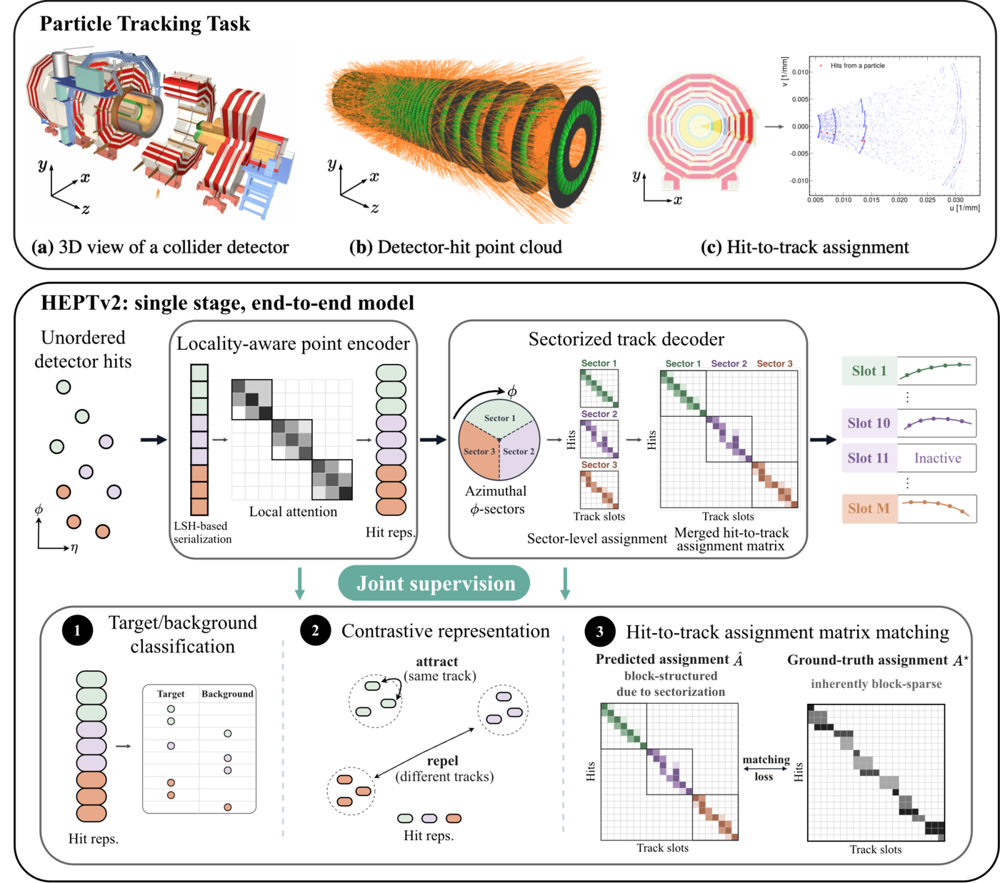
HEPTv2: End-to-End Efficient Point Transformer for Charged Particle Reconstruction
Charged-particle tracking -- reconstructing trajectories from sparse detector measurements -- is a fundamental high-energy-physics inference problem and a canonical example of learning under extreme combinatorial ambiguity. At the High-Luminosity Large Hadron Collider (HL-LHC), tracking must remain accurate and efficient despite unprecedented collision densities. Graph neural networks perform strongly, but incur substantial costs from graph construction and processing, while transformer-based approaches rely on auxiliary stages that prevent end-to-end optimization. To address this, we present HEPTv2, an end-to-end point-transformer architecture that reconstructs tracks from detector hits in one trainable pipeline. HEPTv2 combines a locality-aware point encoder with a track decoder that predicts complete trajectories without graph-building, clustering, or filtering. The encoder uses locality-sensitive hashing in detector coordinate space to preserve tracking-relevant geometry while enabling efficient local attention. The decoder resolves ambiguities through sectorized decoding and direct hit-to-track prediction under joint encoder-decoder supervision, allowing the full pipeline to be optimized end-to-end. On TrackML, HEPTv2 achieves 98.6% double-majority tracking efficiency at a 0.8% fake rate, while requiring only ~15 ms inference time and 0.4 GB peak memory per event on a NVIDIA A100 GPU. Latency and memory scale approximately linearly for events with up to \(5\times 10^5\) hits. HEPTv2 establishes a new state of the art in the accuracy-latency trade-off, improving efficiency by 4.5% over the strongest prior transformer and by 1.1-2.2% over optimized graph-based pipelines, while reducing latency by factors of 7 and 38-52, respectively. These results show end-to-end transformers can deliver the accuracy and efficiency required for real-time particle reconstruction at the HL-LHC.
Paper: arXiv:2606.20437
Code: https://github.com/Graph-COM/HEPTv2
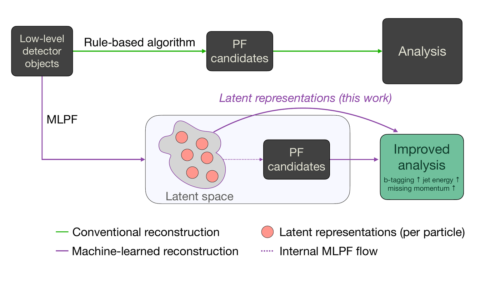
Machine-learned particle flow as a foundation model for collider physics
The workflow from particle collision to physics analysis passes through a series of reconstruction steps that are traditionally modular and disconnected, with no shared representation linking low-level detector data to high-level analysis tasks. We show that casting event reconstruction as a machine learning problem naturally produces such a shared representation. We repurpose a machine learning model trained for particle-flow reconstruction (MLPF) to perform three distinct analysis tasks: jet flavor identification, jet energy regression, and missing momentum regression. By appending the per-particle latent representations learned during reconstruction as additional input features, we substantially improve over baselines that use kinematic features alone. We further demonstrate that a single linear layer trained using only the latent representations achieves competitive performance against state-of-the-art baseline architectures, and outperforms the baseline for missing momentum regression with approximately 35 times fewer parameters. These results demonstrate that the latent representations learned during reconstruction encode essential physics information needed for downstream analysis, establishing MLPF as a foundation model and offering a concrete step toward an end-to-end pipeline from detector data to physics analysis.
Paper: arXiv:2606.14373
Code: https://github.com/jpata/particleflow
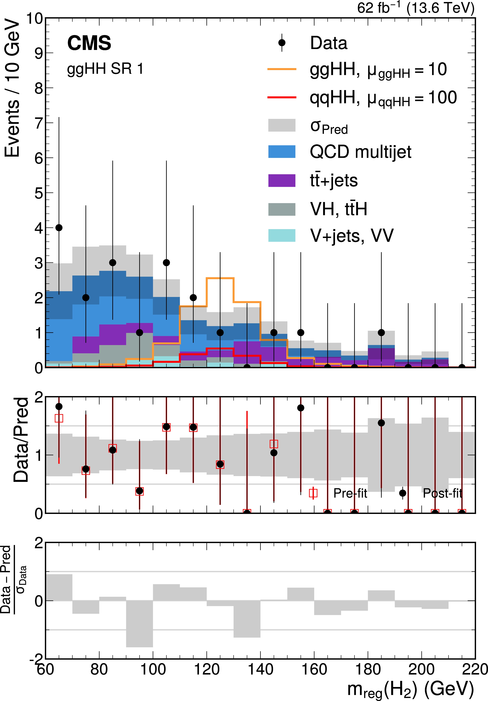
Improved results on Higgs boson pair production in the 4b final state
Measurements of Higgs boson pair (HH) production in the four bottom quark (4b) final state are presented using proton-proton (pp) collision data at \(\sqrt{s} = 13.6\) TeV collected by the CMS experiment at the CERN LHC, corresponding to an integrated luminosity of 62 fb\(^{-1}\). Events in which the Higgs boson decays, \(H\to b\overline{b}\), are separately reconstructed as pairs of small-radius jets (resolved), as well as those where they are reconstructed as single large-radius jets (merged), are studied exclusively. Benefiting from new methods in trigger selection, event selection, and signal extraction, the combination of analyses in the resolved and merged topologies gives an observed (expected) upper limit on the HH signal strength, \(\mu_{HH}\), of 4.4 (4.4) at 95% confidence level (CL). Compared to previously published LHC results in the 4b final state, the expected limit with an equivalent integrated luminosity is improved by more than a factor of two in the resolved topology and is better in the merged topology as well. An updated analysis of the resolved topology using 138 fb\(^{-1}\) of 13 TeV pp collision data yields an observed (expected) 95% CL upper limit on \(\mu_{HH}\) of 10.0 (5.9), an improvement of about 25% in the expected limit compared to the published results using the same data. Results in the 4b final state with 13 and 13.6 TeV are combined, resulting in an observed (expected) 95% CL upper limit on \(\mu_{HH}\) of 4.7 (2.8). The allowed ranges for the Higgs boson trilinear self-coupling and quartic coupling between two Higgs bosons and two vector bosons are also reported. These are the most stringent constraints achieved in the 4b final state to date.
Paper: arXiv:2604.27044
Figures: http://cms-results.web.cern.ch/cms-results/public-results/publications/HIG-24-010
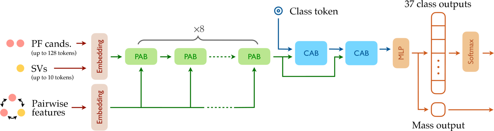
Particle transformers for identifying Lorentz-boosted Higgs bosons decaying to a pair of W bosons
A novel deep neural network classifier, a ``Particle transformer'' (ParT), is introduced for the identification of highly Lorentz-boosted resonances reconstructed as single, multipronged jets in measurements and searches performed by the CMS Collaboration at the CERN LHC. Based on a self-attention mechanism that allows the model to weigh the importance of different particles, ParT is trained on a wide variety of topologies, notably demonstrating strong performance for the first time on jets originating from boosted Higgs boson decays to W bosons. The ParT algorithm achieves a tagging efficiency of more than 50% for such jets at a background efficiency of 1%, while maintaining decorrelation from the jet mass. A calibration is performed in proton-proton collision data collected by CMS at a center-of-mass energy of 13 TeV, with a data set corresponding to a total luminosity of 138 fb\(^{-1}\). Data-to-simulation selection efficiency scale factors are measured to be in the 0.9-1.0 range, with relative uncertainties between 7 and 23%. The tagging capability of ParT enhances the sensitivity of standard model measurements and searches for beyond-the-standard-model resonances decaying to hadronic diboson systems.
Paper: arXiv:2604.09809
Figures: http://cms-results.web.cern.ch/cms-results/public-results/publications/JME-25-001
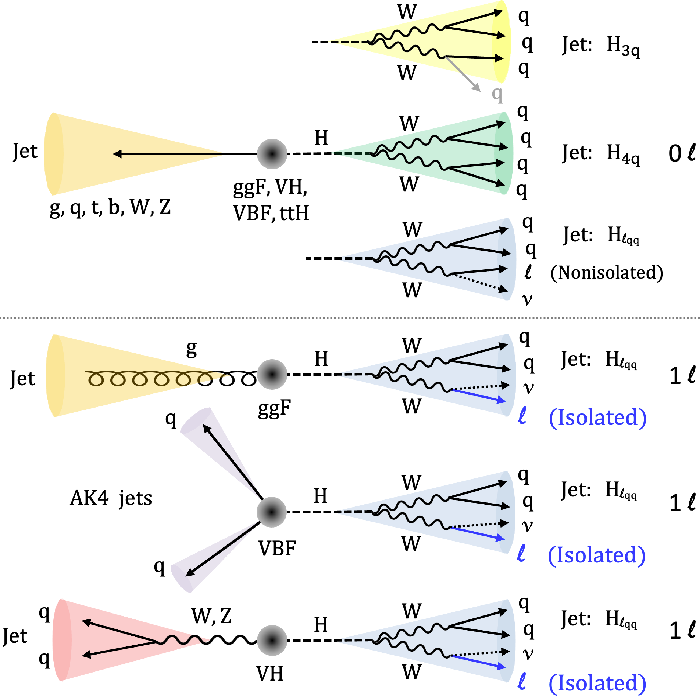
Particle transformers for identifying Lorentz-boosted Higgs bosons decaying to a pair of W bosons
A search for Higgs boson (H) production at high transverse momentum (\(p_\mathrm{T}\)) in the WW decay channel is presented. The analysis uses proton-proton collisions at \(\sqrt{s} = 13\) TeV recorded by the CMS experiment in 2016-2018, corresponding to an integrated luminosity of 138 fb\(^{-1}\). The visible decay products of the Higgs boson are reconstructed as a single large-radius jet with one isolated lepton or none (\(1\ell\) and \(0\ell\), respectively; \(\ell = e, \mu\)). The H-candidate jets are identified using an advanced transformer-based algorithm and are calibrated with the Lund jet plane reweighting technique. The \(1\ell\) channel is further split into gluon fusion, vector boson fusion, and associated production with hadronically decaying vector boson categories, while the \(0\ell\) channel considers all production processes inclusively. The measured cross section times the H → WW branching fraction relative to the standard model expectation is \(\mu = -0.19^{+0.48}_{-0.46}\), indicating no evidence of a signal above the background. This measurement represents the first dedicated study of highly Lorentz-boosted \(H\to WW\) decays, complementing earlier searches for high-\(p_\mathrm{T}\) Higgs boson in other decay channels.
Paper: arXiv:2603.22233
Figures: https://cms-results.web.cern.ch/cms-results/public-results/publications/HIG-24-008
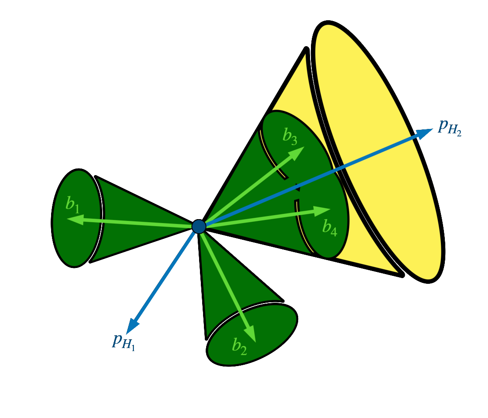
Reconstruction of boosted and resolved multi-Higgs-boson events with symmetry-preserving attention networks
The production of multiple Higgs bosons at the CERN LHC provides a direct way to measure the trilinear and quartic Higgs self-interaction strengths as well as potential access to beyond the standard model effects that can enhance production at large transverse momentum \(p_\mathrm{T}\). The largest event fraction arises from the fully hadronic final state in which every Higgs boson decays to a bottom quark-antiquark pair (\(b\overline{b}\)). This introduces a combinatorial challenge known as the jet assignment problem: assigning jets to sets representing Higgs boson candidates. Symmetry-preserving attention networks (SPA-Nets) have been developed to address this challenge. However, the complexity of jet assignment increases when simultaneously considering both \(H\to b\overline{b}\) reconstruction possibilities, i.e., two "resolved" small-radius jets each containing a shower initiated by a \(b\) quark or one "boosted" large-radius jet containing a merged shower initiated by a (\(b\overline{b}\)) pair. The latter improves the reconstruction efficiency at high \(p_\mathrm{T}\). In this work, we introduce a generalization to the SPA-Net approach to simultaneously consider both boosted and resolved reconstruction possibilities and unambiguously interpret an event as "fully resolved", "fully boosted", or in between. We report the performance of baseline methods, the original SPA-Net approach, and our generalized version on nonresonant \(HH\) and \(HHH\) production at the LHC.
Paper: arXiv:2412.03819
Code: https://github.com/ucsd-hep-ex/hhh
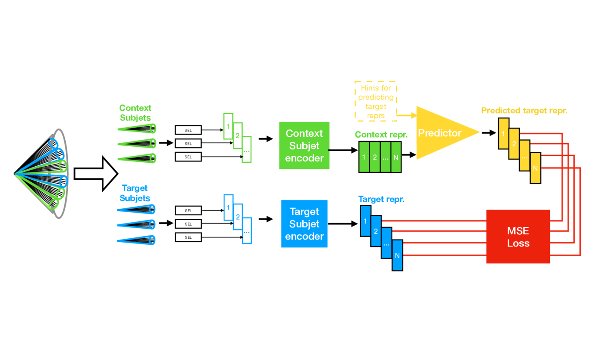
Learning Symmetry-Independent Jet Representations via Jet-Based Joint Embedding Predictive Architecture
In high energy physics, self-supervised learning (SSL) methods have the potential to aid in the creation of machine learning models without the need for labeled datasets for a variety of tasks, including those related to jets -- narrow sprays of particles produced by quarks and gluons in high energy particle collisions. This study introduces an approach to learning jet representations without hand-crafted augmentations using a jet-based joint embedding predictive architecture (J-JEPA), which aims to predict various physical targets from an informative context. As our method does not require hand-crafted augmentation like other common SSL techniques, J-JEPA avoids introducing biases that could harm downstream tasks. Since different tasks generally require invariance under different augmentations, this training without hand-crafted augmentation enables versatile applications, offering a pathway toward a cross-task foundation model. We finetune the representations learned by J-JEPA for jet tagging and benchmark them against task-specific representations.
Paper: arXiv:2412.05333
Code: https://github.com/ucsd-hep-ex/J-JEPA
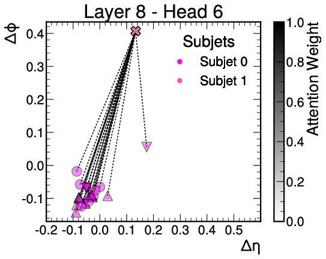
Interpreting Transformers for Jet Tagging
Machine learning (ML) algorithms, particularly attention-based transformer models, have become indispensable for analyzing the vast data generated by particle physics experiments like ATLAS and CMS at the CERN LHC. Particle Transformer (ParT), a state-of-the-art model, leverages particle-level attention to improve jet-tagging tasks, which are critical for identifying particles resulting from proton collisions. This study focuses on interpreting ParT by analyzing attention heat maps and particle-pair correlations on the \((\eta, \phi)\) plane, revealing a binary attention pattern where each particle attends to at most one other particle. At the same time, we observe that ParT shows varying focus on important particles and subjets depending on decay, indicating that the model learns traditional jet substructure observables. These insights enhance our understanding of the model's internal workings and learning process, offering potential avenues for improving the efficiency of transformer architectures in future high-energy physics applications.
Paper: arXiv:2412.03673
Code: https://github.com/aaronw5/Interpreting-Transformers-for-Jet-Tagging
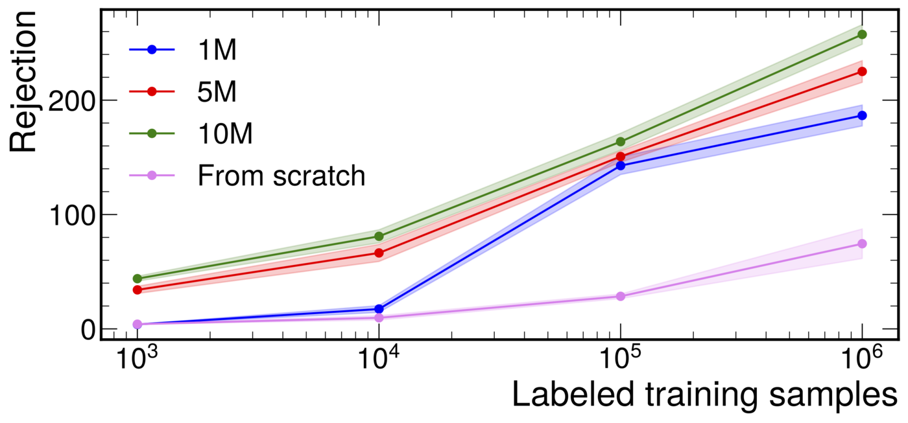
Large-Scale Pretraining and Finetuning for Efficient Jet Classification in Particle Physics
Faced with the increasing computational cost of producing high-quality labeled simulation samples at the CERN LHC, we propose leveraging large volumes of unlabeled data to overcome the limitations of supervised learning methods, which heavily rely on detailed labeled simulations. By pretraining models on these vast, mostly untapped datasets, we aim to learn generic representations that can be finetuned with smaller quantities of labeled data. Our methodology employs contrastive learning with augmentations on jet datasets to teach the model to recognize common representations of jets, addressing the unique challenges of LHC physics. We showcase the scalability and effectiveness of our models by gradually increasing the size of the pretraining dataset and assessing the resultant performance enhancements. Our results, obtained from experiments on two datasets---JetClass, representing unlabeled data, and Top Tagging, serving as labeled simulation data---show significant improvements in data efficiency, computational efficiency, and overall performance.
Paper: arXiv:2408.09343
Code: https://github.com/JavierZhao/JetCLR
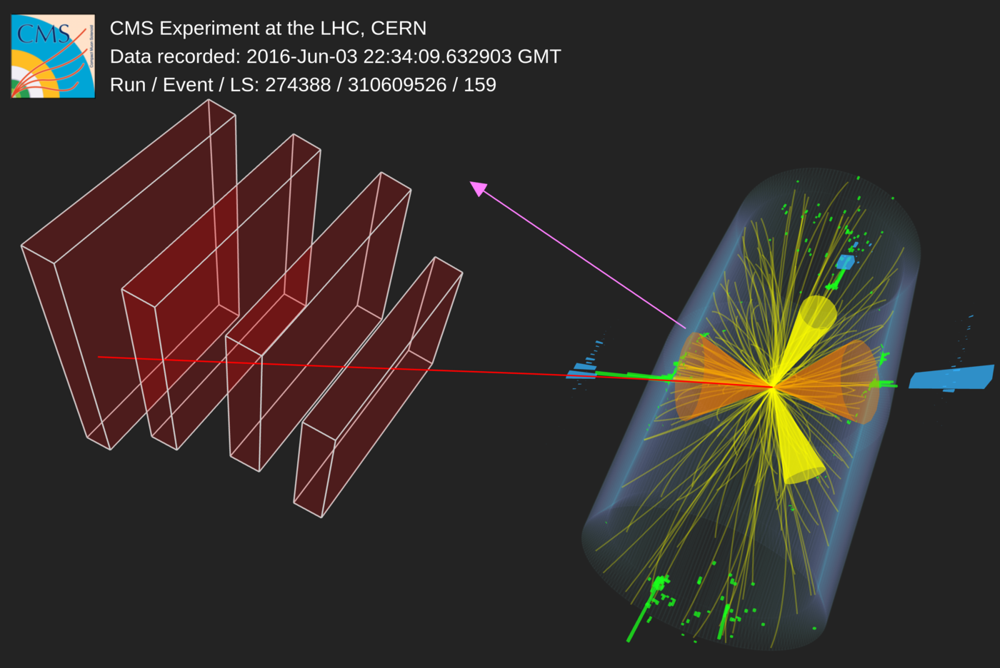
Search for highly energetic double Higgs boson production in the two bottom quark and two vector boson all-hadronic final state
A search for standard model (SM) nonresonant Higgs boson pair (\(\mathrm{HH}\)) production is performed in the two bottom quark (\(\mathrm{b\overline{b}}\)) and all-hadronic two vector boson (\(\mathrm{VV}\to\mathrm{4q}\)) final states. The search is carried out in proton-proton collisions at \(13\,\mathrm{TeV}\) with a data set corresponding to a total luminosity of \(138\,\mathrm{fb}^{-1}\). It selects for highly Lorentz-boosted HH events, where each Higgs boson's daughter quarks are all merged inside a single anti-\(k_\mathrm{T}\) \(R = 0.8\) jet and introduces the new global particle transformer (GloParT) classifier to effectively perform boosted \(\mathrm{VV}\to\mathrm{4q}\) jet identification. The multiplicative modifier of the SM quartic coupling between two Higgs bosons and two vector bosons is observed (expected) to be constrained at \(95\%\) confidence level to \(\kappa_\mathrm{2V} \in [-0.04, 2.05]\) (\([0.05, 1.98]\)).
PAS: CMS-PAS-HIG-23-012
Figures: https://cms-results.web.cern.ch/cms-results/public-results/preliminary-results/HIG-23-012
2D Event display: CMS-PHO-EVENTS-2024-034
3D Event display: CMS-HIG-23-012
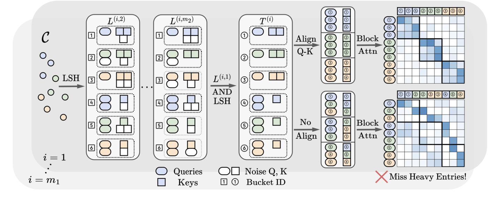
Locality-Sensitive Hashing-Based Efficient Point Transformer with Applications in High-Energy Physics
This study introduces a novel transformer model optimized for large-scale point cloud processing in scientific domains such as high-energy physics (HEP) and astrophysics. Addressing the limitations of graph neural networks and standard transformers, our model integrates local inductive bias and achieves near-linear complexity with hardware-friendly regular operations. One contribution of this work is the quantitative analysis of the error-complexity tradeoff of various sparsification techniques for building efficient transformers. Our findings highlight the superiority of using locality-sensitive hashing (LSH), especially OR & AND-construction LSH, in kernel approximation for large-scale point cloud data with local inductive bias. Based on this finding, we propose LSH-based Efficient Point Transformer (HEPT), which combines E2LSH with OR & AND constructions and is built upon regular computations. HEPT demonstrates remarkable performance on two critical yet time-consuming HEP tasks, significantly outperforming existing GNNs and transformers in accuracy and computational speed, marking a significant advancement in geometric deep learning and large-scale scientific data processing.
Paper: arXiv:2402.12535
Code: https://github.com/Graph-COM/HEPT
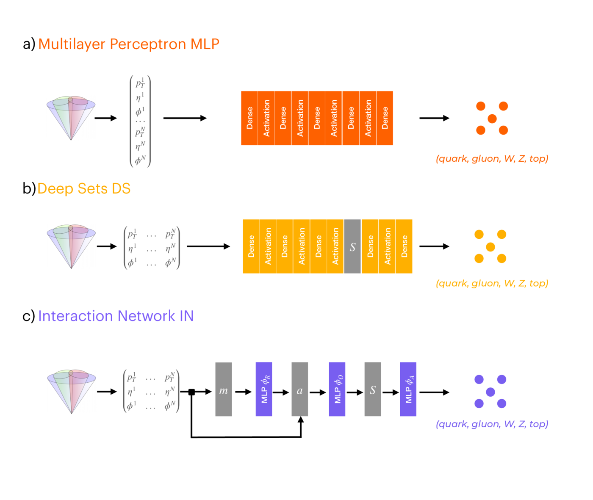
Ultrafast jet classification on FPGAs for the HL-LHC
Three machine learning models are used to perform jet origin classification. These models are optimized for deployment on a field-programmable gate array device. In this context, we demonstrate how latency and resource consumption scale with the input size and choice of algorithm. Moreover, the models proposed here are designed to work on the type of data and under the foreseen conditions at the CERN LHC during its high-luminosity phase. Through quantization-aware training and efficient synthetization for a specific field programmable gate array, we show that \(\mathcal{O}(100)\) ns inference of complex architectures such as Deep Sets and Interaction Networks is feasible at a relatively low computational resource cost.
Paper: Mach. Learn.: Sci. Technol. 5, 035017 (2024)
Code: https://github.com/fastmachinelearning/l1-jet-id
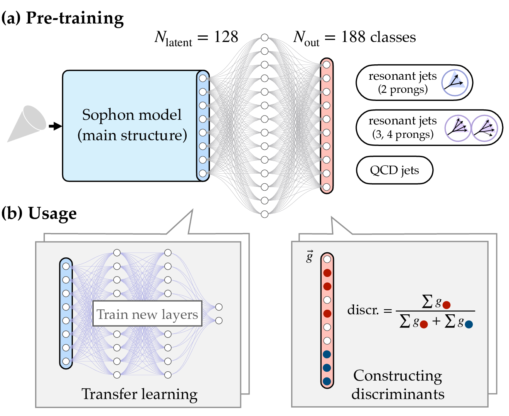
Accelerating Resonance Searches via Signature-Oriented Pre-training
The search for heavy resonances beyond the Standard Model (BSM) is a key objective at the LHC. While the recent use of advanced deep neural networks for boosted-jet tagging significantly enhances the sensitivity of dedicated searches, it is limited to specific final states, leaving vast potential BSM phase space underexplored. We introduce a novel experimental method, Signature-Oriented Pre-training for Heavy-resonance ObservatioN (Sophon), which leverages deep learning to cover an extensive number of boosted final states. Pre-trained on the comprehensive JetClass-II dataset, the Sophon model learns intricate jet signatures, ensuring the optimal constructions of various jet tagging discriminates and enabling high-performance transfer learning capabilities. We show that the method can not only push widespread model-specific searches to their sensitivity frontier, but also greatly improve model-agnostic approaches, accelerating LHC resonance searches in a broad sense.
Paper: arXiv:2405.12972
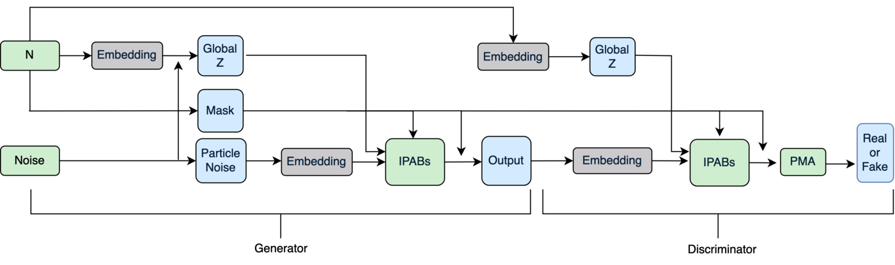
Induced Generative Adversarial Particle Transformers
In high energy physics (HEP), machine learning methods have emerged as an effective way to accurately simulate particle collisions at the Large Hadron Collider (LHC). The message-passing generative adversarial network (MPGAN) was the first model to simulate collisions as point, or ``particle'', clouds, with state-of-the-art results, but suffered from quadratic time complexity. Recently, generative adversarial particle transformers (GAPTs) were introduced to address this drawback; however, results did not surpass MPGAN. We introduce induced GAPT (iGAPT) which, by integrating ``induced particle-attention blocks'' and conditioning on global jet attributes, not only offers linear time complexity but is also able to capture intricate jet substructure, surpassing MPGAN in many metrics. Our experiments demonstrate the potential of iGAPT to simulate complex HEP data accurately and efficiently.
Paper: arXiv:2312.04757
Code: https://github.com/rkansal47/MPGAN/tree/igapt
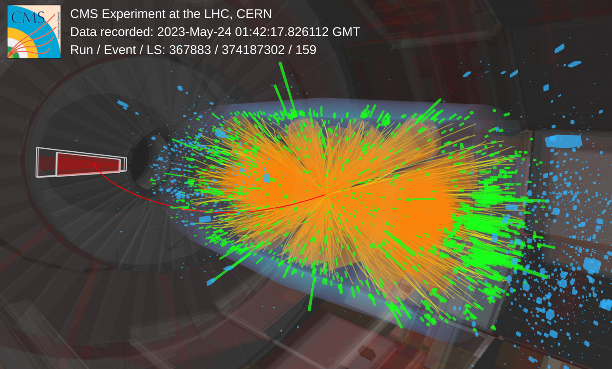
Anomaly Detection in the CMS Global Trigger Test Crate for Run 3
This DPS note shows the design, implementation, and performance of an ML-based trigger algorithm, AXOL1TL, which selects anomalous events in real-time. The AXOL1TL algorithm was implemented in Level-1 Global Trigger Test Crate for 2023 data taking.
CMS Detector Performance Summary: https://cds.cern.ch/record/2876546
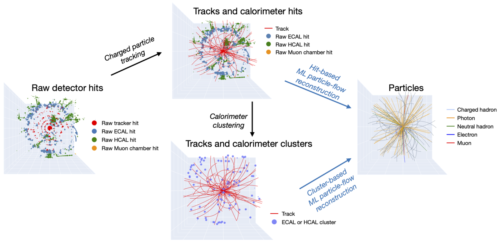
Improved particle-flow event reconstruction with scalable neural networks for current and future particle detectors
Efficient and accurate algorithms are necessary to reconstruct particles in the highly granular detectors anticipated at the High-Luminosity Large Hadron Collider and the Future Circular Collider. We study scalable machine learning models for event reconstruction in electron-positron collisions based on a full detector simulation. Particle-flow reconstruction can be formulated as a supervised learning task using tracks and calorimeter clusters. We compare a graph neural network and kernel-based transformer and demonstrate that we can avoid quadratic operations while achieving realistic reconstruction. We show that hyperparameter tuning significantly improves the performance of the models. The best graph neural network model shows improvement in the jet transverse momentum resolution by up to 50% compared to the rule-based algorithm. The resulting model is portable across Nvidia, AMD and Habana hardware. Accurate and fast machine-learning based reconstruction can significantly improve future measurements at colliders.
Paper: Commun. Phys. 7, 124 (2024)
Code: https://github.com/jpata/particleflow
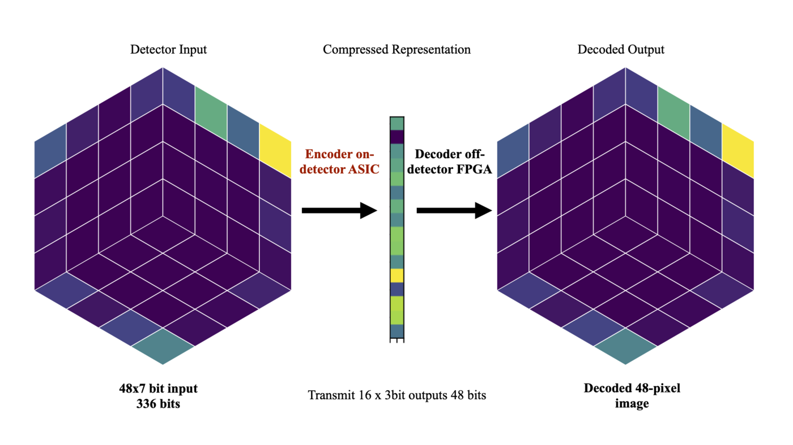
Differentiable Earth Mover's Distance for Data Compression at the High-Luminosity LHC
The Earth mover's distance (EMD) is a useful metric for image recognition and classification, but its usual implementations are not differentiable or too slow to be used as a loss function for training other algorithms via gradient descent. In this paper, we train a convolutional neural network (CNN) to learn a differentiable, fast approximation of the EMD and demonstrate that it can be used as a substitute for computing-intensive EMD implementations. We apply this differentiable approximation in the training of an autoencoder-inspired neural network (encoder NN) for data compression at the high-luminosity LHC at CERN. The goal of this encoder NN is to compress the data while preserving the information related to the distribution of energy deposits in particle detectors. We demonstrate that the performance of our encoder NN trained using the differentiable EMD CNN surpasses that of training with loss functions based on mean squared error.
Paper: Mach. Learn.: Sci. Technol. 4, 045058 (2023)
Code: https://github.com/rohanshenoy/Ecoder
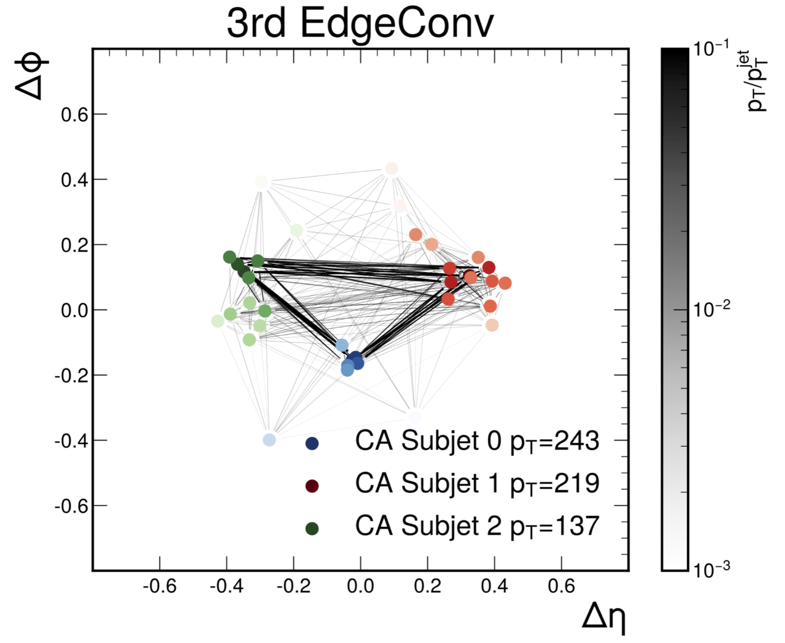
Do graph neural networks learn traditional jet substructure?
At the CERN LHC, the task of jet tagging, whose goal is to infer the origin of a jet given a set of final-state particles, is dominated by machine learning methods. Graph neural networks have been used to address this task by treating jets as point clouds with underlying, learnable, edge connections between the particles inside. We explore the decision-making process for one such state-of-the-art network, ParticleNet, by looking for relevant edge connections identified using the layerwise-relevance propagation technique. As the model is trained, we observe changes in the distribution of relevant edges connecting different intermediate clusters of particles, known as subjets. The resulting distribution of subjet connections is different for signal jets originating from top quarks, whose subjets typically correspond to its three decay products, and background jets originating from lighter quarks and gluons. This behavior indicates that the model is using traditional jet substructure observables, such as the number of prongs -- energetic particle clusters -- within a jet, when identifying jets.
Paper: arXiv:2211.09912
Code: https://github.com/farakiko/xai4hep
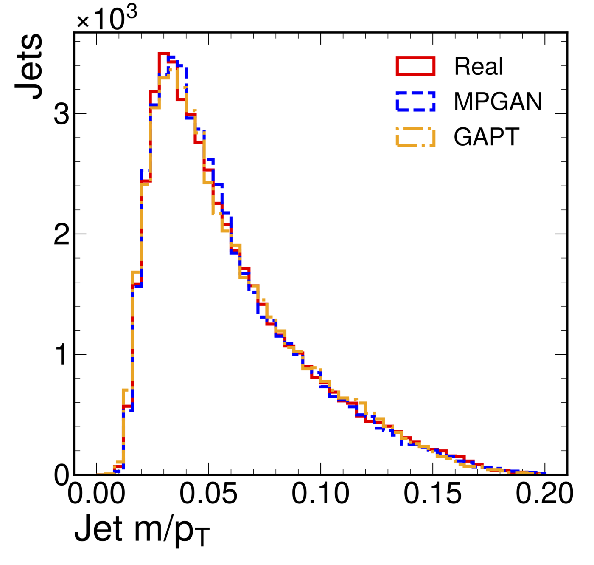
Evaluating Generative Models in High Energy Physics
There has been a recent explosion in research into machine-learning-based generative modeling to tackle computational challenges for simulations in high energy physics (HEP). In order to use such alternative simulators in practice, we need well defined metrics to compare different generative models and evaluate their discrepancy from the true distributions. We present the first systematic review and investigation into evaluation metrics and their sensitivity to failure modes of generative models, using the framework of two-sample goodness-of-fit testing, and their relevance and viability for HEP. Inspired by previous work in both physics and computer vision, we propose two new metrics, the Fréchet and kernel physics distances (FPD and KPD), and perform a variety of experiments measuring their performance on simple Gaussian-distributed, and simulated high energy jet datasets. We find FPD, in particular, to be the most sensitive metric to all alternative jet distributions tested and recommend its adoption, along with the KPD and Wasserstein distances between individual feature distributions, for evaluating generative models in HEP. We finally demonstrate the efficacy of these proposed metrics in evaluating and comparing a novel attention-based generative adversarial particle transformer to the state-of-the-art message-passing generative adversarial network jet simulation model.
Paper: Phys. Rev. D 107, 076017 (2023)
Code: https://github.com/rkansal47/MPGAN
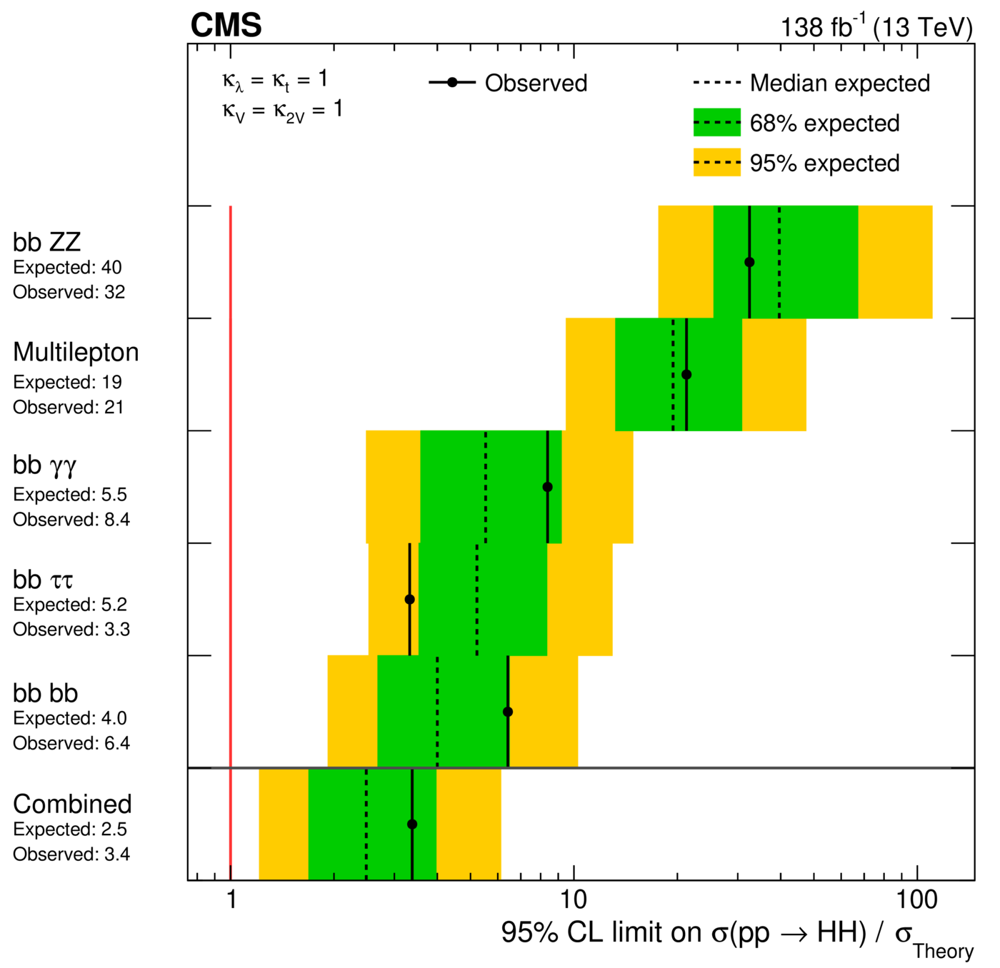
A portrait of the Higgs boson by the CMS experiment ten years after the discovery
In July 2012, the ATLAS and CMS Collaborations at the CERN Large Hadron Collider announced the observation of a Higgs boson at a mass of around 125 GeV. Ten years later, and with the data corresponding to the production of 30 times larger number of Higgs bosons, we have learnt much more about the properties of the Higgs boson. The CMS experiment has observed the Higgs boson in numerous fermionic and bosonic decay channels, established its spin-parity quantum numbers, determined its mass and measured its production cross sections in various modes. Here the CMS Collaboration reports the most up-to-date combination of results on the properties of the Higgs boson, including the most stringent limit on the cross section for the production of a pair of Higgs bosons, on the basis of data from proton-proton collisions at a centre-of-mass energy of 13 TeV. Within the uncertainties, all these observations are compatible with the predictions of the standard model of elementary particle physics. Much evidence points to the fact that the standard model is a low-energy approximation of a more comprehensive theory. Several of the standard model issues originate in the sector of Higgs boson physics. An order of magnitude larger number of Higgs bosons, expected to be examined over the next fifteen years, will help deepen our understanding of this crucial sector.
Paper: Nature 607, 60 (2022)
Figures: https://cms-results.web.cern.ch/cms-results/public-results/publications/HIG-22-001/index.html
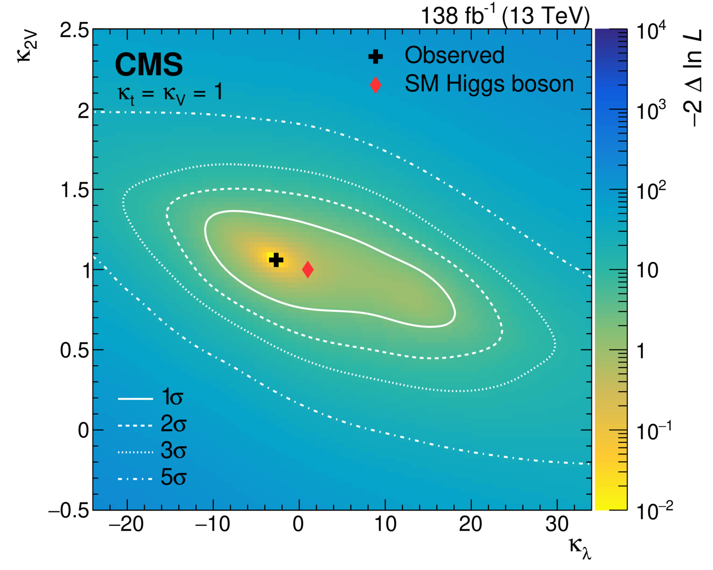
Nonresonant pair production of highly energetic Higgs bosons decaying to bottom quarks
A search for nonresonant Higgs boson (H) pair production via gluon and vector boson (V) fusion is performed in the four-bottom-quark final state, using proton-proton collision data at 13 TeV corresponding to 138 fb\(^{-1}\) collected by the CMS experiment at the LHC. The analysis targets Lorentz-boosted H pairs identified using a graph neural network. It constrains the strengths relative to the standard model of the H self-coupling and the quartic VVHH couplings, \(\kappa_{2V}\), excluding \(\kappa_{2V}=0\) for the first time, with a significance of 6.3 standard deviations when other H couplings are fixed to their standard model values.
Paper: Phys. Rev. Lett. 131, 041803 (2023)
Figures: https://cms-results.web.cern.ch/cms-results/public-results/publications/B2G-22-003/index.html
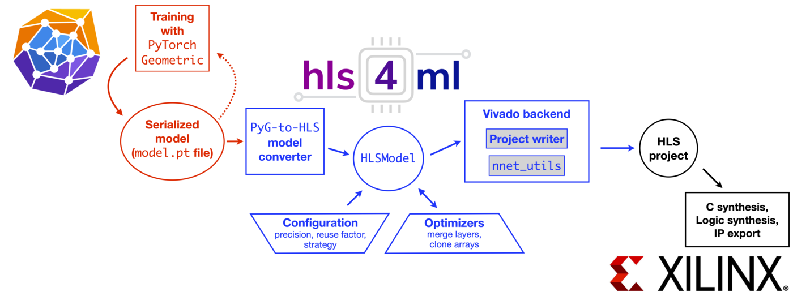
Graph Neural Networks for Charged Particle Tracking on FPGAs
The determination of charged particle trajectories in collisions at the CERN Large Hadron Collider (LHC) is an important but challenging problem, especially in the high interaction density conditions expected during the future high-luminosity phase of the LHC (HL-LHC). Graph neural networks (GNNs) are a type of geometric deep learning algorithm that has successfully been applied to this task by embedding tracker data as a graph -- nodes represent hits, while edges represent possible track segments -- and classifying the edges as true or fake track segments. However, their study in hardware- or software-based trigger applications has been limited due to their large computational cost. In this paper, we introduce an automated translation workflow, integrated into a broader tool called \(\texttt{hls4ml}\), for converting GNNs into firmware for field-programmable gate arrays (FPGAs). We use this translation tool to implement GNNs for charged particle tracking, trained using the TrackML challenge dataset, on FPGAs with designs targeting different graph sizes, task complexites, and latency/throughput requirements. This work could enable the inclusion of charged particle tracking GNNs at the trigger level for HL-LHC experiments.
Paper: Front. Big Data 5, 828666 (2022)
Code: https://github.com/abdelabd/hls4ml/tree/pyg_to_hls_rebase_w_dataflow
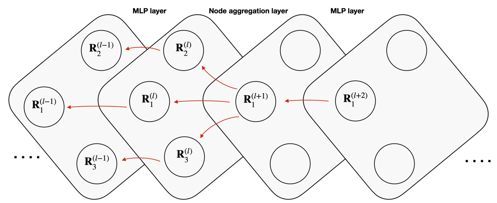
Explaining machine-learned particle-flow reconstruction
The particle-flow (PF) algorithm is used in general-purpose particle detectors to reconstruct a comprehensive particle-level view of the collision by combining information from different subdetectors. A graph neural network (GNN) model, known as the machine-learned particle-flow (MLPF) algorithm, has been developed to substitute the rule-based PF algorithm. However, understanding the model's decision making is not straightforward, especially given the complexity of the set-to-set prediction task, dynamic graph building, and message-passing steps. In this paper, we adapt the layerwise-relevance propagation technique for GNNs and apply it to the MLPF algorithm to gauge the relevant nodes and features for its predictions. Through this process, we gain insight into the model's decision-making.
Paper: arXiv:2111.12840
Code: https://github.com/faroukmokhtar/particleflow
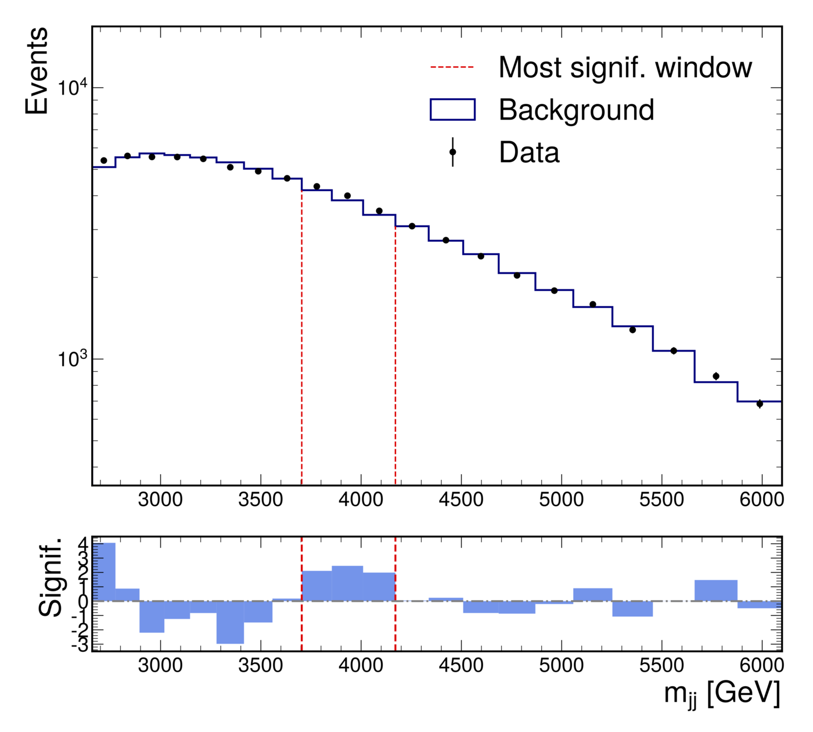
Particle Graph Autoencoders and Differentiable, Learned Energy Mover's Distance
Autoencoders have useful applications in high energy physics in anomaly detection, particularly for jets---collimated showers of particles produced in collisions such as those at the CERN Large Hadron Collider. We explore the use of graph-based autoencoders, which operate on jets in their "particle cloud" representations and can leverage the interdependencies among the particles within a jet, for such tasks. Additionally, we develop a differentiable approximation to the energy mover's distance via a graph neural network, which may subsequently be used as a reconstruction loss function for autoencoders.
Paper: arXiv:2111.12849
Code: https://github.com/ucsd-hep-ex/GraphAE
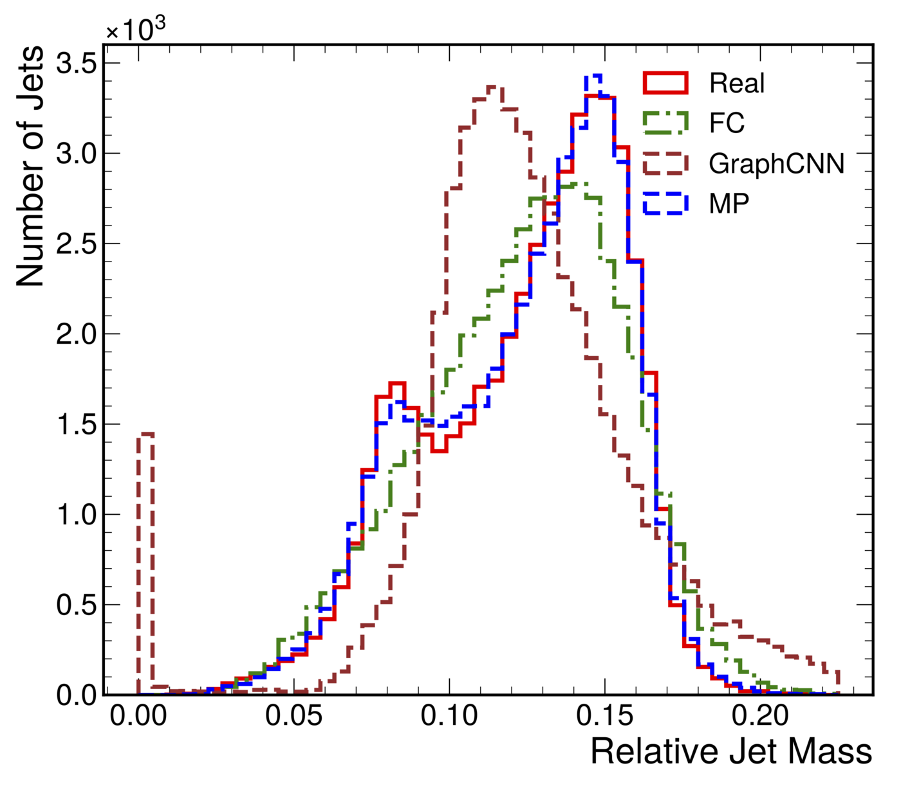
Particle Cloud Generation with Message Passing Generative Adversarial Networks
In high energy physics (HEP), jets are collections of correlated particles produced ubiquitously in particle collisions such as those at the CERN Large Hadron Collider (LHC). Machine-learning-based generative models, such as generative adversarial networks (GANs), have the potential to significantly accelerate LHC jet simulations. Despite jets having a natural representation as a set of particles in momentum-space, a.k.a. a particle cloud, there exist no generative models for such a dataset. We introduce a new particle cloud dataset (JetNet), and apply existing point cloud GANs to it. Existing GANs are found to be inadequate for physics applications, hence we develop a new message passing GAN (MPGAN), which outperforms existing point cloud GANs. We propose JetNet as a novel point-cloud-style dataset for the machine learning community to experiment with, and set MPGAN as a benchmark to improve upon for future generative models.
Paper: NeurIPS
34, 23858 (2021)
Code: https://github.com/rkansal47/MPGAN
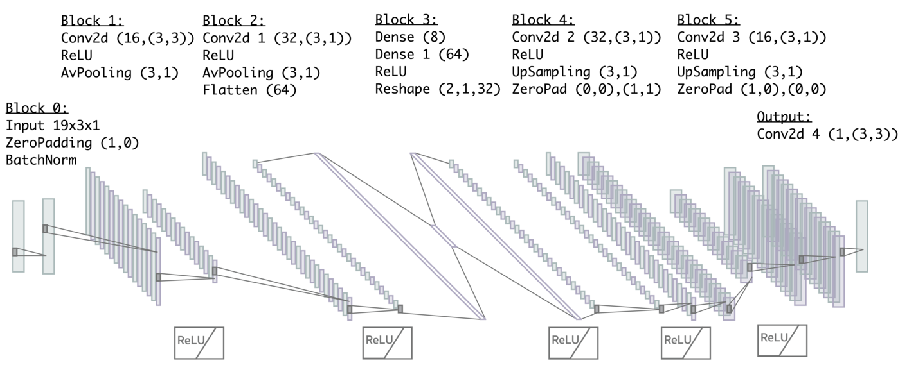
Autoencoders on FPGAs for real-time, unsupervised new physics detection at 40 MHz at the Large Hadron Collider
We show how to adapt and deploy anomaly detection algorithms based on deep autoencoders, for the unsupervised detection of new physics signatures in the extremely challenging environment of a real-time event selection system at the Large Hadron Collider (LHC). We demonstrate that new physics signatures can be enhanced by three orders of magnitude, while staying within the strict latency and resource constraints of a typical LHC event filtering system. In particular, anomaly detection can be performed in as little as 80 ns using less than 3% of the logic resources of a Xilinx Virtex UltraScale+ VU9P FPGA.
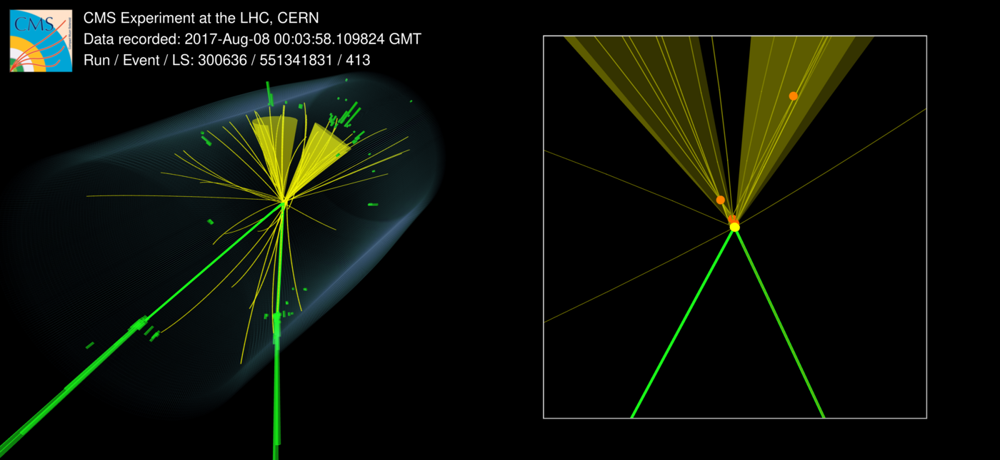
Search for Higgs boson decays into long-lived particles in associated Z boson production
We present a search for long-lived particles (LLPs) produced in association with a Z boson. The search is performed with data from 13 TeV proton-proton collisions recorded by the CMS experiment during 2016-2018, corresponding to an integrated luminosity of 117 fb\(^{-1}\). The LLPs are assumed to decay into a pair of standard model fermions inside the tracker volume, which results in displaced jets. A trigger and selections based on Z boson decays to electron or muon pairs provide sensitivity to light (15 GeV or less) LLPs, which have up to now been difficult to access. Decays of LLPs are selected by requiring the presence of displaced jets which are identified using information from the CMS tracking system. The results are interpreted in the context of exotic decays of the Higgs boson to LLPs (H\(\to\)SS). The search is sensitive to branching fractions \(\mathcal{B}\)(H\(\to\)SS) of 4-5% (less than 20%) for LLP masses of 40 (15) GeV and mean proper decay lengths of 10-100 mm (10-50 mm).
Paper: J. High Energy Phys. 03, 160 (2022)
Figures: http://cms-results.web.cern.ch/cms-results/public-results/publications/EXO-20-003
2D Event display: CMS-PHO-EVENTS-2021-014
3D Event display: CMS-EXO-20-003
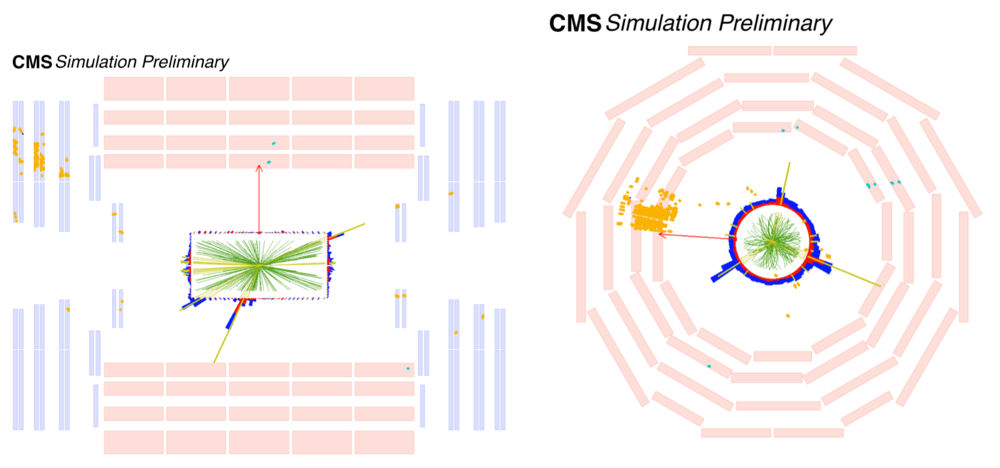
Search for long-lived particles decaying in the CMS endcap muon system in proton-proton collisions at \(\sqrt{s}\) = 13 TeV
A search for long-lived particles (LLPs) produced in decays of standard model (SM) Higgs bosons in 137 fb\(^{−1}\) of proton-proton collisions at \(\sqrt{s}\) = 13 TeV recorded by the CMS experiment during 2016-2018 is presented. The search employs a novel technique to reconstruct hadronic decays of LLPs in the endcap muon system. The search is sensitive to a broad range of LLP decay modes including \(\tau^-\tau^+\), LLP masses as low as a few GeV, and is largely model-independent. No excess of events above the SM background is observed and stringent limits on the Higgs boson (h\(^0\)) branching fraction to LLPs (S) are obtained, particularly for proper decay lengths greater than a few meters. This search result represents the most stringent limits on the branching fraction \(\mathcal{B}\)(h\(^0\to\)SS) for proper decay lengths greater than 6-40 m for S masses between 7-40 GeV.
Paper: Phys. Rev. Lett. 127, 261804 (2021)
Figures: http://cms-results.web.cern.ch/cms-results/public-results/publications/EXO-20-015/index.html
3D Event display: CMS-EXO-20-015
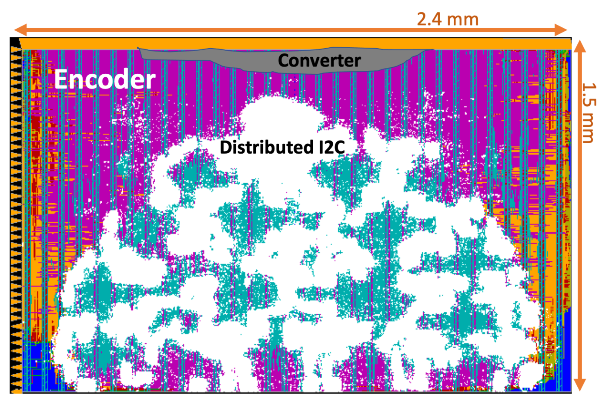
A reconfigurable neural network ASIC for detector front-end data compression at the HL-LHC
Despite advances in the programmable logic capabilities of modern trigger systems, a significant bottleneck remains in the amount of data to be transported from the detector to off-detector logic where trigger decisions are made. We demonstrate that a neural network autoencoder model can be implemented in a radiation tolerant ASIC to perform lossy data compression alleviating the data transmission problem while preserving critical information of the detector energy profile. For our application, we consider the high-granularity calorimeter from the CMS experiment at the CERN Large Hadron Collider. The advantage of the machine learning approach is in the flexibility and configurability of the algorithm. By changing the neural network weights, a unique data compression algorithm can be deployed for each sensor in different detector regions, and changing detector or collider conditions. To meet area, performance, and power constraints, we perform a quantization-aware training to create an optimized neural network hardware implementation. The design is achieved through the use of high-level synthesis tools and the \(\texttt{hls4ml}\) framework, and was processed through synthesis and physical layout flows based on a LP CMOS 65 nm technology node. The flow anticipates 200 Mrad of ionizing radiation to select gates, and reports a total area of 3.6 mm^2 and consumes 95 mW of power. The simulated energy consumption per inference is 2.4 nJ. This is the first radiation tolerant on-detector ASIC implementation of a neural network that has been designed for particle physics applications.
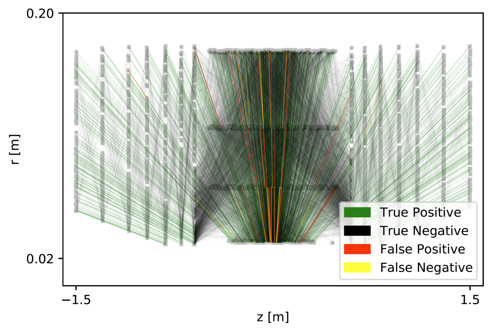
Charged particle tracking via edge-classifying interaction networks
Tracker events are naturally represented as graphs by identifying hits as nodes and track segments as edges; given a set of hypothesized edges, edge-classifying graph neural networks (GNNs) predict which correspond to real track segments. In this work, we adapt the physics-motivated interaction network (IN) to the problem of charged-particle tracking in the high-pileup conditions expected at the HL-LHC. We demonstrate its excellent edge-classification accuracy and tracking efficiency through a suite of measurements at each stage of GNN-based tracking: graph construction, edge classification, and track building. The proposed IN architecture is substantially smaller than previously studied GNN tracking architectures, a reduction in size critical for enabling GNN-based tracking in constrained computing environments. Furthermore, the IN is easily expressed as a set of matrix operations, making it a promising candidate for acceleration via heterogeneous computing resources.
Paper: Comput. Softw. Big Sci. 5, 26 (2021)
Code: https://github.com/GageDeZoort/interaction_network_paper
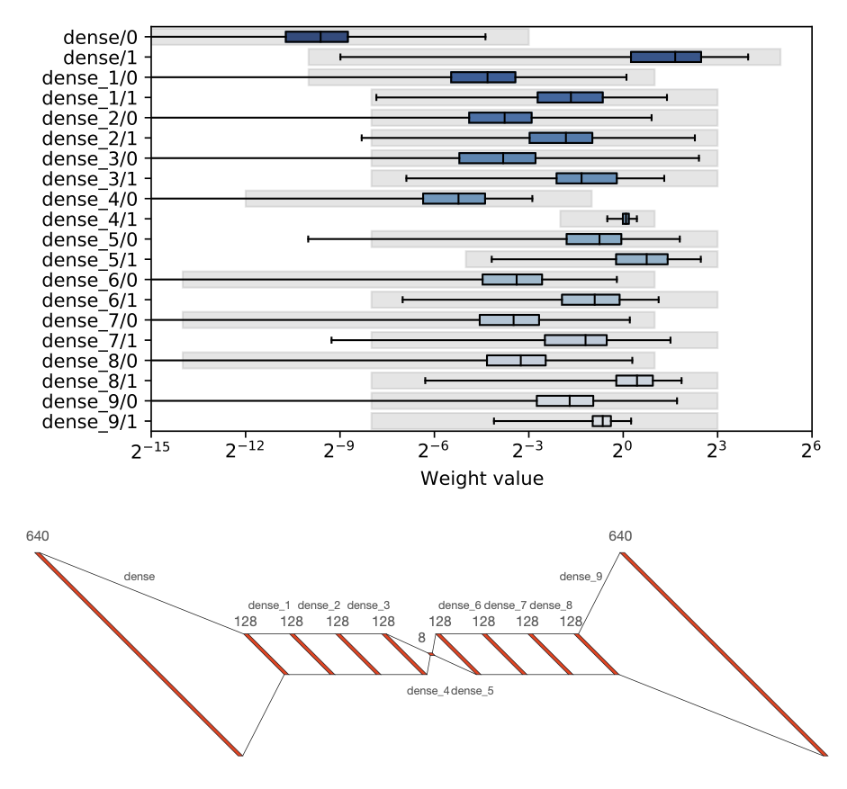
\(\texttt{hls4ml}\): An Open-Source Codesign Workflow to Empower Scientific Low-Power Machine Learning Devices
To support domain scientists, we have developed \(\texttt{hls4ml}\), an open-source software-hardware codesign workflow to interpret and translate machine learning algorithms for implementation with both FPGA and ASIC technologies. We expand on previous \(\texttt{hls4ml}\) work by extending capabilities and techniques towards low-power implementations and increased usability: new Python APIs, quantization-aware pruning, end-to-end FPGA workflows, long pipeline kernels for low power, and new device backends include an ASIC workflow. Taken together, these and continued efforts in \(\texttt{hls4ml}\) will arm a new generation of domain scientists with accessible, efficient, and powerful tools for machine-learning-accelerated discovery.
Paper: arXiv:2103.05579
Code: https://github.com/fastmachinelearning/hls4ml
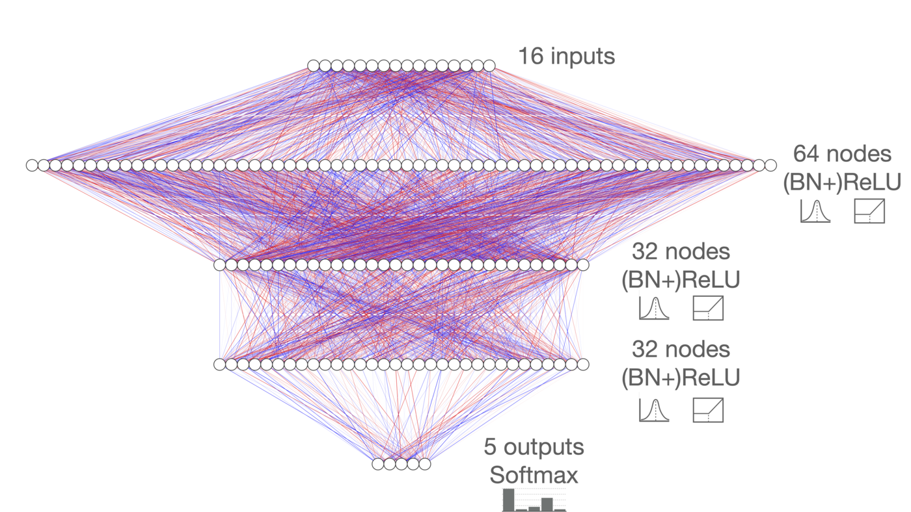
Ps and Qs: Quantization-aware pruning for efficient low latency neural network inference
We explore the interplay between pruning and quantization during the training of neural networks for ultra low latency applications targeting high energy physics use cases. However, techniques developed for this study have potential application across many other domains. We study various configurations of pruning during quantization-aware training, which we term quantization-aware pruning and the effect of techniques like regularization, batch normalization, and different pruning schemes on multiple computational or neural efficiency metrics. We find that quantization-aware pruning yields more computationally efficient models than either pruning or quantization alone for our task. Further, quantization-aware pruning typically performs similar to or better in terms of computational efficiency compared to standard neural architecture optimization techniques. While the accuracy for the benchmark application may be similar, the information content of the network can vary significantly based on the training configuration.
Paper: Front. AI 4, 94 (2021)
Code: https://github.com/ben-hawks/pytorch-jet-classify
MLPF: Efficient machine-learned particle-flow reconstruction using graph neural networks
In general-purpose particle detectors, the particle flow algorithm may be used to reconstruct a coherent particle-level view of the event by combining information from the calorimeters and the trackers, significantly improving the detector resolution for jets and the missing transverse momentum. In view of the planned high-luminosity upgrade of the CERN Large Hadron Collider, it is necessary to revisit existing reconstruction algorithms and ensure that both the physics and computational performance are sufficient in a high-pileup environment. Recent developments in machine learning may offer a prospect for efficient event reconstruction based on parametric models. We introduce MLPF, an end-to-end trainable machine-learned particle flow algorithm for reconstructing particle flow candidates based on parallelizable, computationally efficient, scalable graph neural networks and a multi-task objective. We report the physics and computational performance of the MLPF algorithm on on a synthetic dataset of top quark-antiquark events in HL-LHC running conditions, including the simulation of multiple interaction effects, and discuss potential next steps and considerations towards ML-based reconstruction in a general purpose particle detector.
Paper: Eur. Phys. J. C 81, 381 (2021)
Code: https://github.com/jpata/particleflow
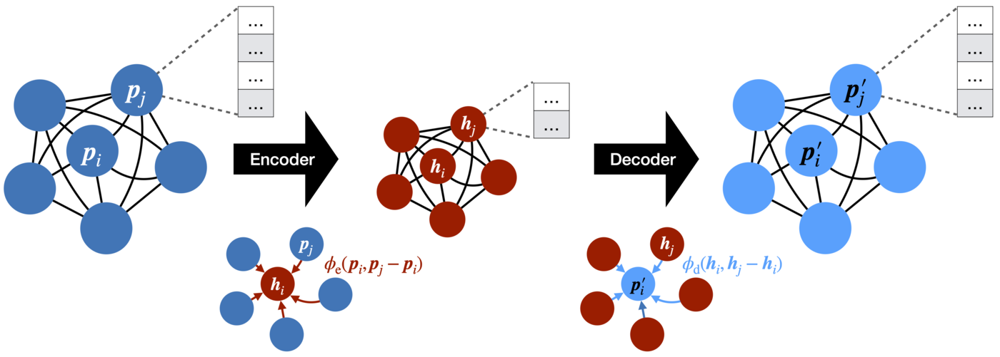
The LHC Olympics 2020: A community challenge for anomaly detection in high energy physics
A new paradigm for data-driven, model-agnostic new physics searches at colliders is emerging, and aims to leverage recent breakthroughs in anomaly detection and machine learning. In order to develop and benchmark new anomaly detection methods within this framework, it is essential to have standard datasets. To this end, we have created the LHC Olympics 2020, a community challenge accompanied by a set of simulated collider events. Participants in these Olympics have developed their methods using an R&D dataset and then tested them on black boxes: datasets with an unknown anomaly (or not). This paper will review the LHC Olympics 2020 challenge, including an overview of the competition, a description of methods deployed in the competition, lessons learned from the experience, and implications for data analyses with future datasets as well as future colliders.
Paper: Rep. Prog. Phys. 84, 124201 (2021)
Code: https://github.com/stsan9/AnomalyDetection4Jets
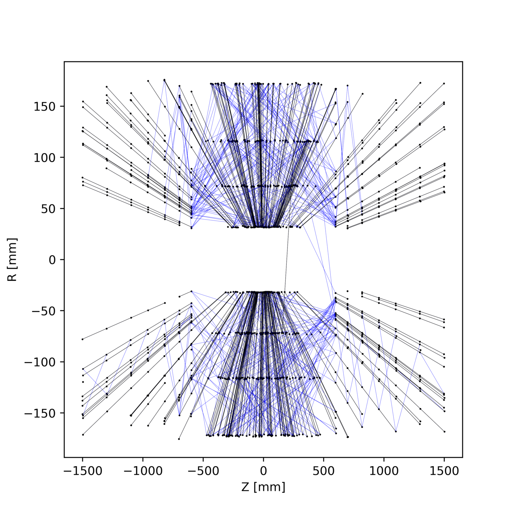
Accelerated charged particle tracking with graph neural networks on FPGAs
We develop and study FPGA implementations of algorithms for charged particle tracking based on graph neural networks. The two complementary FPGA designs are based on OpenCL, a framework for writing programs that execute across heterogeneous platforms, and \(\texttt{hls4ml}\), a high-level-synthesis-based compiler for neural network to firmware conversion. We evaluate and compare the resource usage, latency, and tracking performance of our implementations based on a benchmark dataset. We find a considerable speedup over CPU-based execution is possible, potentially enabling such algorithms to be used effectively in future computing workflows and the FPGA-based Level-1 trigger at the CERN Large Hadron Collider.
Paper: arXiv:2012.01563
Code: https://github.com/vesal-rm/hls4ml/tree/graph_pipeline/example-prjs/graph
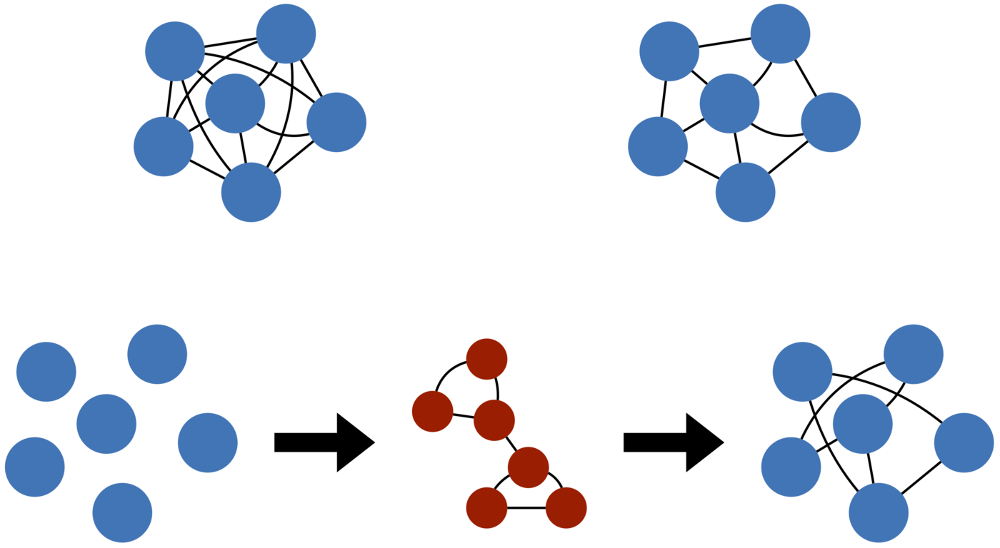
Graph neural networks for particle tracking and reconstruction
We review graph neural networks for particle tracking and event reconstruction in high energy physics, including the mathematical formalism, design considerations, recent applications, and the outlook for their deployment in current and future experiments.
Review: Artificial Intelligence for High Energy Physics, Chapter 12 (2022)
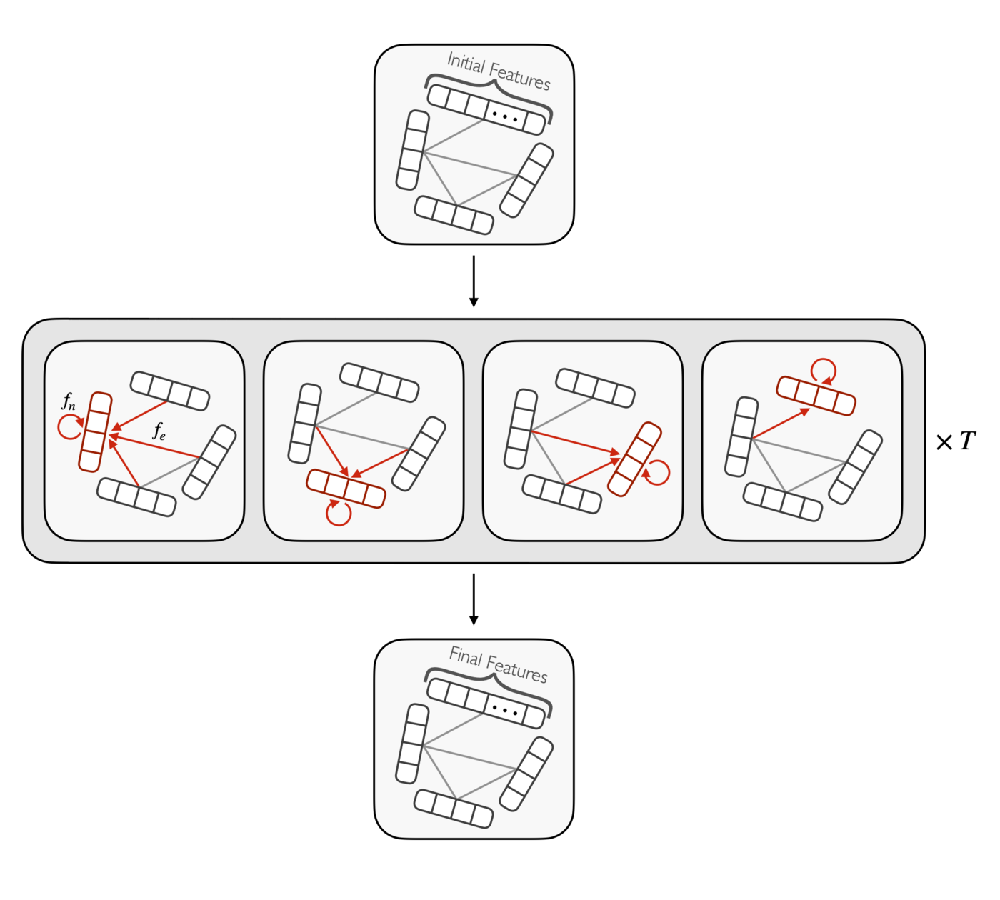
Graph generative adversarial networks for sparse data generation in high energy physics
We develop a graph generative adversarial network to generate sparse data sets like those produced at the CERN Large Hadron Collider (LHC). We demonstrate this approach by training on and generating sparse representations of MNIST handwritten digit images and jets of particles in proton-proton collisions like those at the LHC. We find the model successfully generates sparse MNIST digits and particle jet data. We quantify agreement between real and generated data with a graph-based Fréchet Inception distance, and the particle and jet feature-level 1-Wasserstein distance for the MNIST and jet datasets respectively.
Paper: arXiv:2012.00173
Code: https://github.com/rkansal47/graph-gan
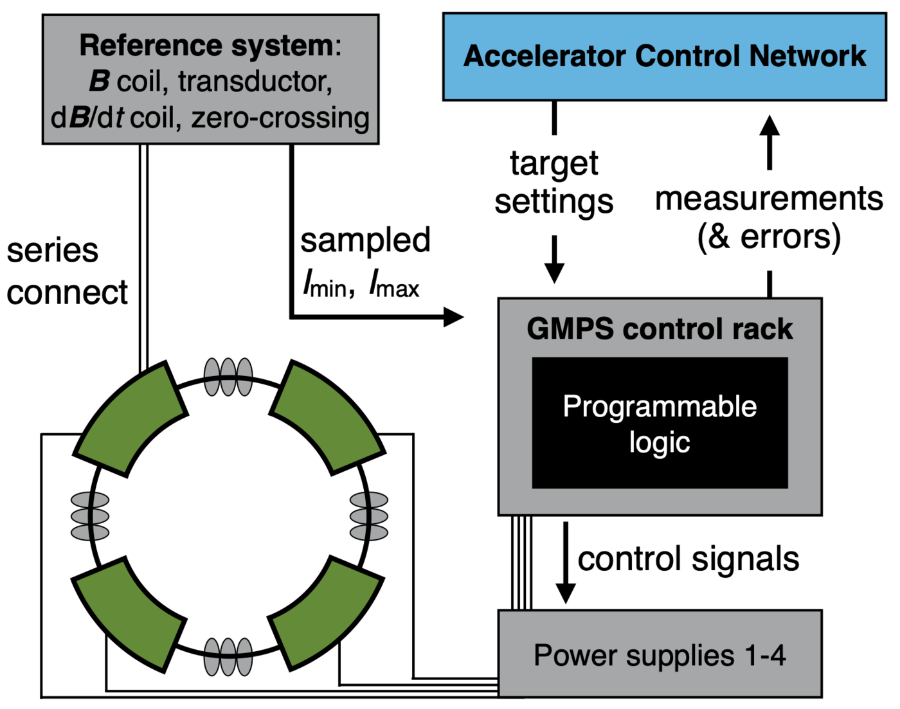
Real-time artificial intelligence for accelerator control: A study at the Fermilab Booster
We describe a method for precisely regulating the gradient magnet power supply at the Fermilab Booster accelerator complex using a neural network trained via reinforcement learning. We demonstrate preliminary results by training a surrogate machine-learning model on real accelerator data to emulate the Booster environment, and using this surrogate model in turn to train the neural network for its regulation task. We additionally show how the neural networks to be deployed for control purposes may be compiled to execute on field-programmable gate arrays. This capability is important for operational stability in complicated environments such as an accelerator facility.
Paper: Phys. Rev. Accel. Beams 24, 104601
(2021)
Code: https://github.com/fermilab-accelerator-ai/control-for-accelerators-in-hep
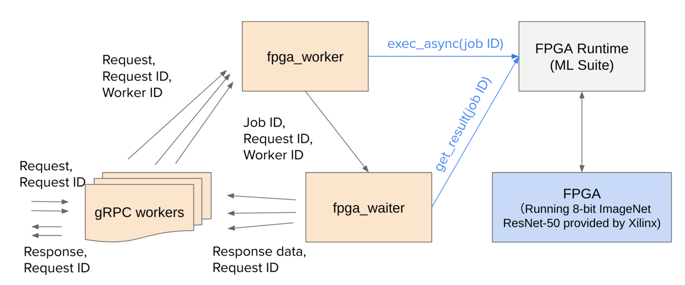
FPGAs-as-a-service toolkit (FaaST)
Computing needs for high energy physics are already intensive and are expected to increase drastically in the coming years. In this context, heterogeneous computing, specifically as-a-service computing, has the potential for significant gains over traditional computing models. Although previous studies and packages in the field of heterogeneous computing have focused on GPUs as accelerators, FPGAs are an extremely promising option as well. A series of workflows are developed to establish the performance capabilities of FPGAs as a service. Multiple different devices and a range of algorithms for use in high energy physics are studied. For a small, dense network, the throughput can be improved by an order of magnitude with respect to GPUs as a service. For large convolutional networks, the throughput is found to be comparable to GPUs as a service. This work represents the first open-source FPGAs-as-a-service toolkit.
Paper: 2020 IEEE/ACM H2RC Workshop, p. 38
Code: https://github.com/fastmachinelearning/FaaST
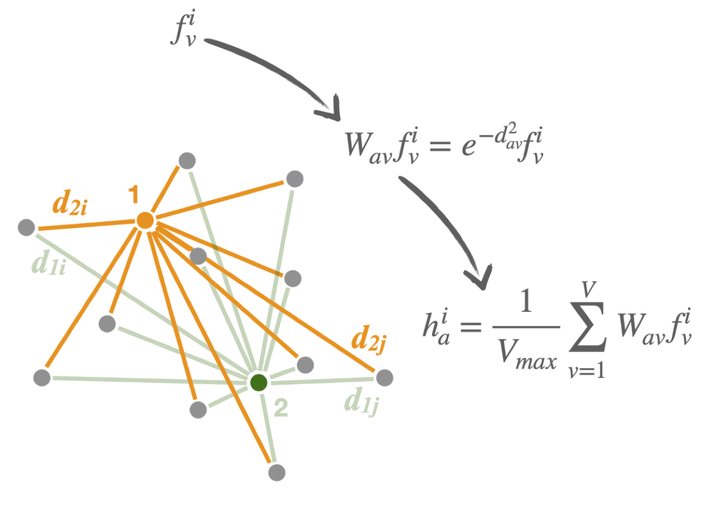
Distance-weighted graph neural networks on FPGAs for real-time particle reconstruction in high energy physics
We use a graph neural network architecture developed for real-time particle reconstruction and identification in a next-generation calorimeter and simplify it to meet the computing constraints of Level-1 trigger systems, including weight quantization. We show how it can be executed with a latency of less than 1\(\mu\)s on an FPGA. Using the \(\texttt{hls4ml}\) library, we convert the compressed models into FPGA firmware. Performance of the synthesized models is presented both in terms of inference accuracy and resource usage.
Paper: Front. Big Data 3, 44 (2021)
Code: https://github.com/fastmachinelearning/hls4ml/pull/213
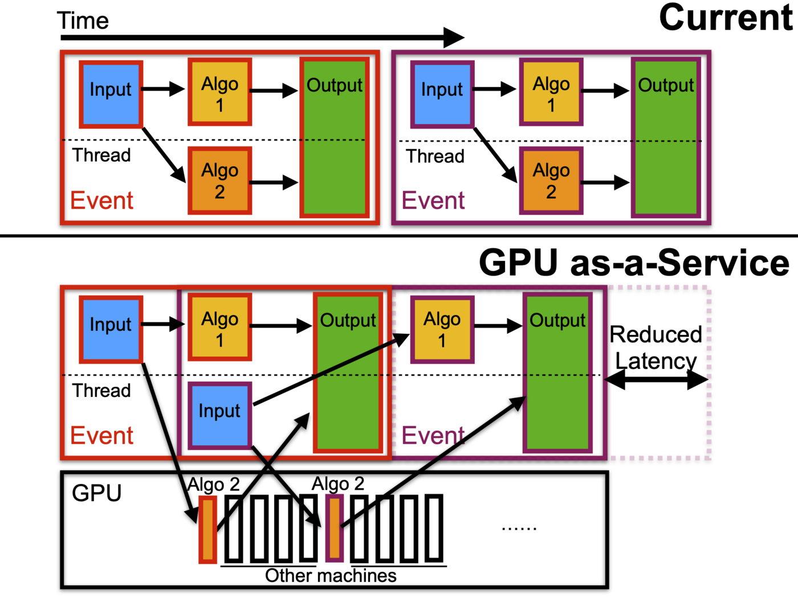
GPU coprocessors as a service for deep learning inference in high energy physics
We present a comprehensive exploration of the use of GPU-based hardware acceleration for deep learning inference within the data reconstruction workflow of high energy physics. We present several realistic examples and discuss a strategy for the seamless integration of coprocessors so that the CERN LHC can maintain, if not exceed, its current performance throughout its running.
Paper: Mach. Learn. Sci. Tech. 2, 035005 (2021)
Code: https://github.com/fastmachinelearning/SonicCMS
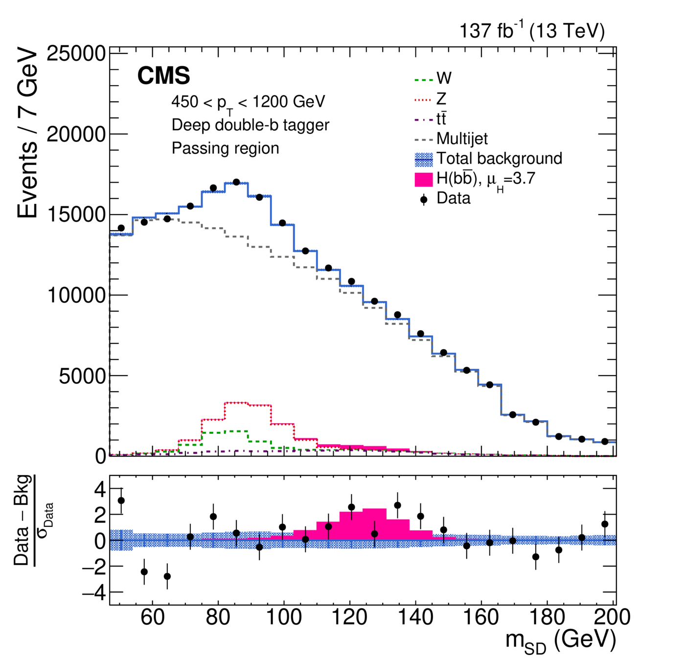
Inclusive search for highly boosted Higgs bosons decaying to bottom quark-antiquark pairs in proton-proton collisions at \(\sqrt{s}=13\) TeV
A search for standard model Higgs bosons (\(\mathrm{H}\)) produced with transverse momentum (\(p_\mathrm{T}\)) greater than 450 GeV and decaying to bottom quark-antiquark pairs (\(\mathrm{b}\overline{\mathrm{b}}\)) is performed using proton-proton collision data collected by the CMS experiment at the LHC at \(\sqrt{s}= 13\) TeV. The data sample corresponds to an integrated luminosity of 137 fb\(^{-1}\). The search is inclusive in the Higgs boson production mode. Highly Lorentz-boosted Higgs bosons decaying to \(\mathrm{b}\overline{\mathrm{b}}\) are reconstructed as single large-radius jets, and are identified using jet substructure and a dedicated b tagging technique based on a deep neural network. For a Higgs boson mass of 125 GeV, an excess of events above the background assuming no Higgs boson production is observed with a local significance of 2.5 standard deviations (\(\sigma\)), while the expectation is 0.7. The corresponding signal strength and local significance with respect to the standard model expectation are \( \mu_\mathrm{H} = 3.7 \pm 1.2 (\mathrm{stat}) ^{+0.6}_{-0.7} (\mathrm{syst}) ^{+0.8}_{−0.5} (\mathrm{theo})\) and \(1.9\,\sigma\). Additionally, an unfolded differential cross section as a function of Higgs boson \(p_\mathrm{T}\) for the gluon fusion production mode is presented, assuming the other production modes occur at the expected rates.
Paper: J. High Energy Phys. 12, 085 (2020)
Figures: http://cms-results.web.cern.ch/cms-results/public-results/publications/HIG-19-003
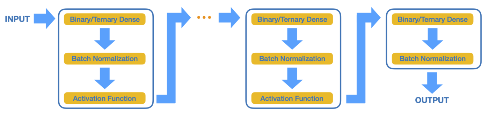
Compressing deep neural networks on FPGAs to binary and ternary precision with \(\texttt{hls4ml}\)
We present the implementation of binary and ternary neural networks in the \(\texttt{hls4ml}\) library, designed to automatically convert deep neural network models to digital circuits with FPGA firmware. We investigate different strategies to reduce networks' resource consumption by reducing the numerical precision of the network parameters to binary or ternary. We discuss the trade-off between model accuracy and resource consumption. In addition, we show how to balance between latency and accuracy by retaining full precision on a selected subset of network components. As examples, we consider two multiclass classification tasks: handwritten digit recognition with the MNIST data set and jet identification with simulated proton-proton collisions at the CERN Large Hadron Collider. The binary and ternary implementation has similar performance to the higher precision implementation while using drastically fewer FPGA resources.
Paper: Mach. Learn.: Sci. Technol. 2, 015001 (2020)
Code: https://github.com/fastmachinelearning/hls4ml
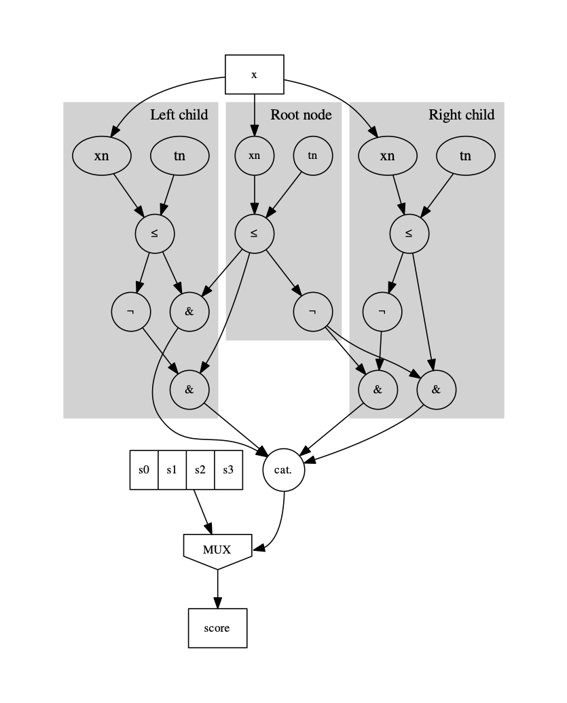
Fast inference of boosted decision trees in FPGAs for particle physics
We describe the implementation of boosted decision trees in the \(\texttt{hls4ml}\) library, which allows the translation of a trained model into FPGA firmware through an automated conversion process. Thanks to its fully on-chip implementation, \(\texttt{hls4ml}\) performs inference of boosted decision tree models with extremely low latency. With a typical latency less than 100 ns, this solution is suitable for FPGA-based real-time processing, such as in the Level-1 trigger system of a collider experiment.
Paper: J. Instrum. 15, P05026 (2020)
Code: https://github.com/fastmachinelearning/hls4ml
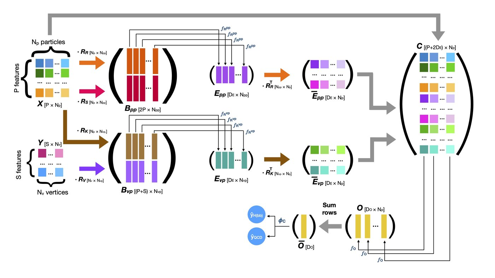
Interaction networks for the identification of boosted \(H\to b\overline{b}\) decays
We develop an algorithm based on an interaction network to identify high-momentum Higgs bosons decaying to bottom quark-antiquark pairs and distinguish them from ordinary jets originating from the hadronization of quarks and gluons. Describing the jet shower as a combination of particle-to-particle and particle-to-vertex interactions, the model is trained to learn a jet representation on which the classification problem is optimized. The algorithm is trained on simulated samples of accurate LHC collisions, released by the CMS collaboration on the CERN Open Data Portal. The interaction network achieves a drastic improvement in the identification performance with respect to state-of-the-art algorithms.
Paper: Phys. Rev. D 102, 012010 (2020)
Code: https://github.com/eric-moreno/IN
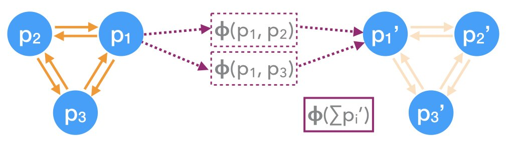
JEDI-net: a jet identification algorithm based on interaction networks
We investigate the performance of a jet identification algorithm based on interaction networks (JEDI-net) to identify all-hadronic decays of high-momentum heavy particles produced at the LHC and distinguish them from ordinary jets originating from the hadronization of quarks and gluons. The jet dynamics are described as a set of one-to-one interactions between the jet constituents. Based on a representation learned from these interactions, the jet is associated to one of the considered categories. The presented models give better results with less model parameters than other traditional architectures.
Paper: Eur. Phys. J. C 80, 58 (2020)
Code: https://github.com/jmduarte/JEDInet-code
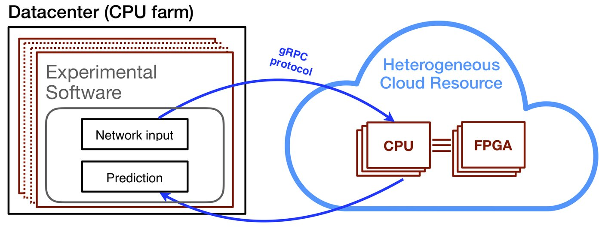
FPGA-accelerated machine learning inference as a service for particle physics computing
We demonstrate that the acceleration of machine learning inference as a service represents a nondisruptive, heterogeneous computing solution for particle physics experiments. We retrain the ResNet-50 convolutional neural network to achieve state-of-the-art performance for top quark jet tagging at the LHC and apply a ResNet-50 model with transfer learning for neutrino event classification. Using Project Brainwave by Microsoft to accelerate the ResNet-50 image classification model, we achieve average inference times of 60 (10) milliseconds with our experimental physics software framework using Brainwave as a cloud (edge or on-premises) service, and a maximum throughput of 600-700 inferences per second.
Paper: Comput. Softw. Big. Sci. 3, 13 (2019)
Code: https://github.com/fastmachinelearning/SonicCMS
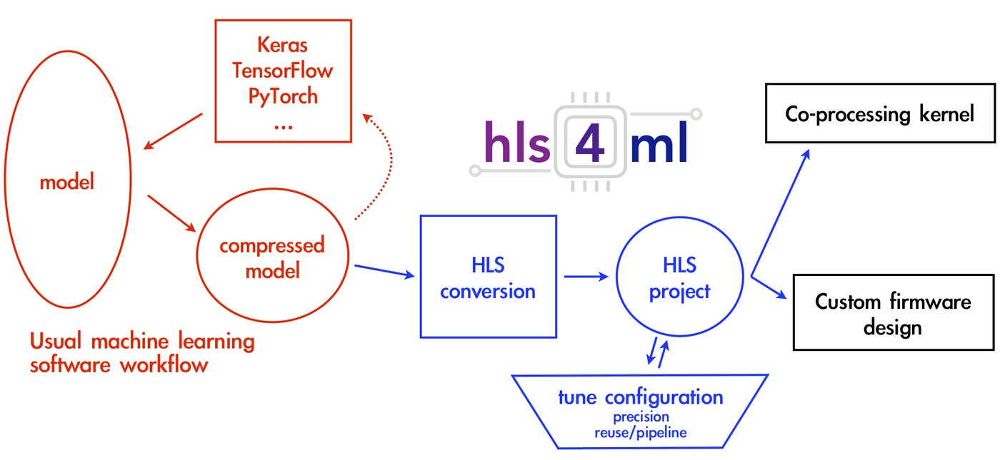
Fast inference of deep neural networks in FPGAs for particle physics
We develop a package based on high-level Synthesis (HLS) called \(\texttt{hls4ml}\) to build machine learning models in FPGAs for extremely low-latency applications (less than one microsecond). The use of HLS increases accessibility across a broad user community and allows for a drastic decrease in firmware development time. We map out FPGA resource usage and latency versus neural network hyperparameters to identify the problems in particle physics that would benefit from performing neural network inference with FPGAs. For a case study jet substructure model, we fit well within the available resources of modern FPGAs with a latency on the scale of 100 ns.
Paper: J. Instrum. 13, P07027 (2018)
Code: https://github.com/fastmachinelearning/hls4ml